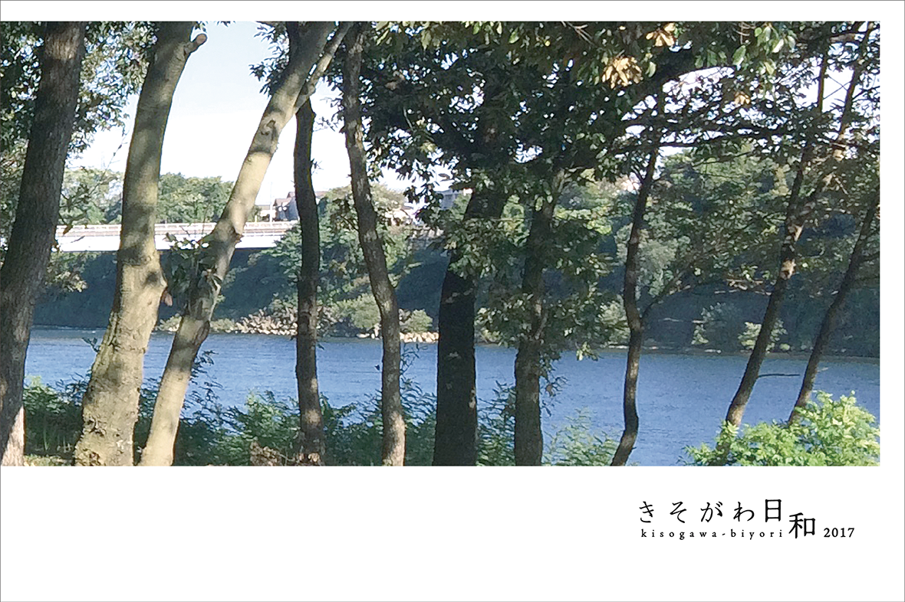
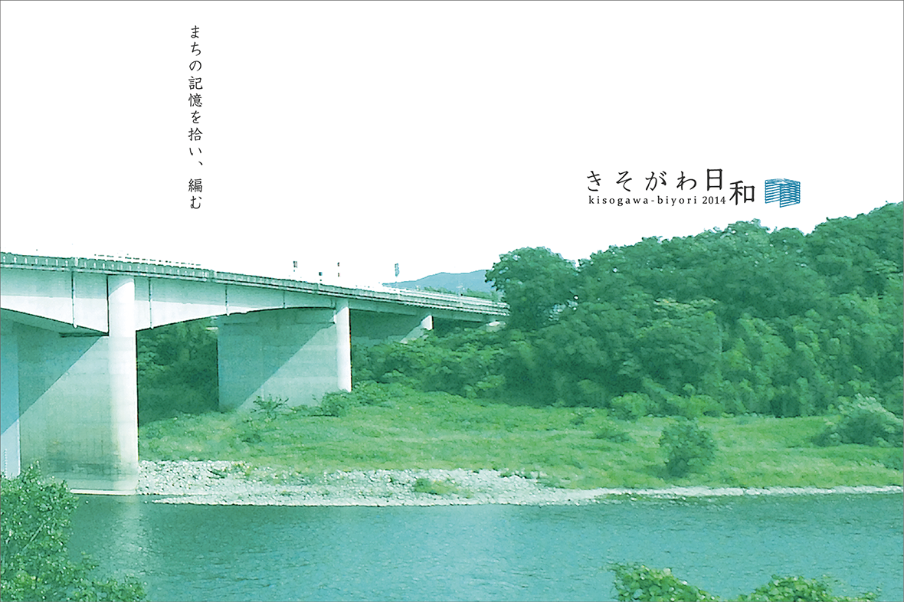
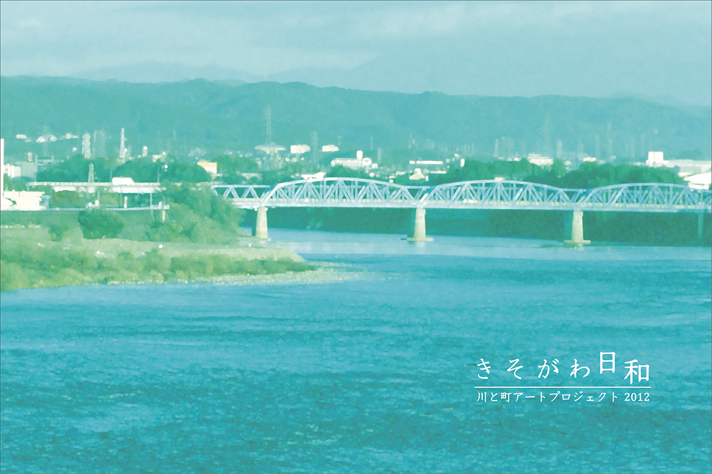
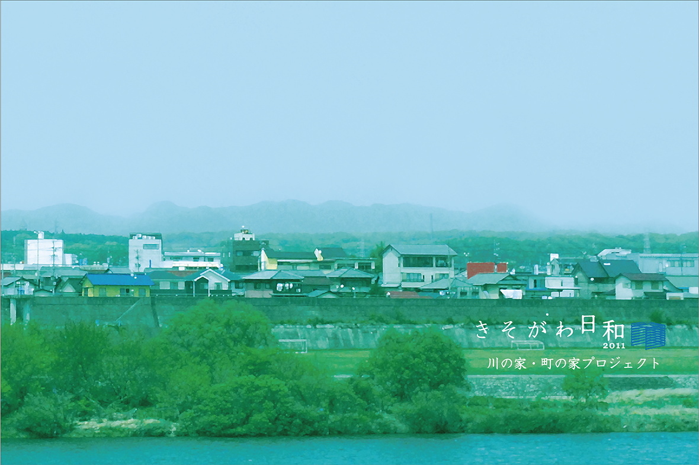

- 2021年 「hokakara」伊藤千帆 小川友美
-
 2020年 きそがわ日和「garden」
2020年 きそがわ日和「garden」
-
 2019年 「時の指紋」きそがわ日和2019 春
2019年 「時の指紋」きそがわ日和2019 春
- 2018年 きそがわ日和 アートシェアリング ～アートを共有する一日～
-  2017年 まち×演劇×アート 〜早稲田･美濃加茂交流まち演劇プロジェクト〜
- 2017年 ワークショップきそがわびより
-
 2016年 「時の指紋」きそがわ日和2016 冬
2016年 「時の指紋」きそがわ日和2016 冬
-
2016年 郡上に棲む精霊たち
-
2016年 ワークショップきそがわびより
-
 2015年 本陣の庭から
2015年 本陣の庭から
-  2014年 まちの記憶を拾い、編む
-
 2013年 森の音・川の音
2013年 森の音・川の音
-  2012年 川と町アートプロジェクト冬
- 2012年 川と町アートプロジェクト夏秋
- 2012年 川と町アートプロジェクト春
-  2011年 川の家・町の家プロジェクト
-
 2010年 きそがわ日和
2010年 きそがわ日和